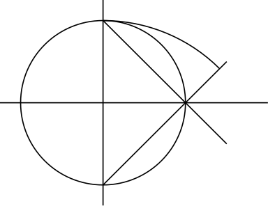

我们在制作文档、幻灯片时，一些概念性的内容可能通过动画的方式能够更清晰地表达。这些概念性的图通常来说比较简单，使用 的 tikz 宏包或其他类似的绘图语言可以很方便地进行绘制，结合 的发行版提供的 animate 宏包则可以方便地生成动画。本文将对这部分内容进行叙述。
使用 animate 宏包创建 pdf 动画
以 tikzpicture 手动绘制关键帧并结合 animate 进行动态 pdf 文件的制作示例代码如下，其中关于 animate 的用法可参考其使用手册。
1 | \documentclass{standalone} |
上述代码的第 5～10 行用于输出时间线文件 ove.txt 从而可以简化代码的内容，使各关键帧中重复的内容无需重复绘制，当ove.txt 生成后，后续可以注释掉这 5 行代码。代码使用任意 编译引擎编译，可以得到动态的 testgif.pdf 文件（假定代码文件名为 testgif.tex）效果如下：
创建 gif 格式的动画
使用上述方法生成的动画是一个 pdf 文件，可能在 Microsoft Word 文件中或网页文件中并不方便使用，有这种需要时可以提取动画中的关键帧，并使用 Imagemagick 转换为 gif 文件。
使用 animate 宏包创建各关键帧单独成页的 pdf 文件
使用 创建动画时，若需要获取关键帧的图像，则应在 animate 宏包载入时使用 export 选项，或将 export 作为文档类的全局选项加载。将前述 代码的第一行改为：
1 | \documentclass[export]{standalone} |
即可，以此编译出的 testgif.pdf 文件中，关键帧则单独成页。

使用 pdftocairo 输出各关键帧的 png 图像文件
利用 cairo 库可以将 pdf 文件中的各页单独输出为一个 png 图像，命令行执行：
1 | pdftocairo -png testgif.pdf |
在同一目录下则生成 testgif-01.png、testgif-02.png …… 等一系列 png 文件。
使用 Imagemagick 程序命令 magick 输出 gif 文件
安装 Imagemagick 程序后，可以在命令行使用 magick 或 convert 命令将一系列 png 文件转换为 gif 文件。命令名称取决于安装时的设定，在 Linux 下为 convert，Windows 下通常为避免与系统的 convert （Windows 下这个命令用于转换磁盘文件系统格式）重名而使用 magick，当然安装时也可以设定使用 convert 命令，但这时自己必须清楚两个可执行文件的路径在系统变量 PATH 中的排列顺序，从而能准确调用正确的程序。以 Windows 下使用 magick 为例，命令行应执行：
1 | magick -delay 50 -loop 0 *.png output.gif |
其中用 -delay 控制每帧切换的时间，单位为 ms，-loop 控制播放次数，-loop 0 则表示无限循环播放。magick（或 convert）命令的其他参数可以参考其使用手册。
使用 animate 宏包和 dvisvgm 创建动态的 svg 文件
另外一种生成动画文件的方式是生成动态的 svg 文件，这类文件可以在 Chromium 内核的浏览器中查看显示。生成方法是对 animate 宏包使用 dvisvgm 选项。以使用文档类全局选项为例，将代码第一行改为：
1 | \documentclass[dvisvgm]{standalone} |
编译时则应该使用 latex 或 xelatex 进行编译，后者还应该使用 --no-pdf 参数来输出 xdv 文件；随后使用 dvisvgm 命令转换 dvi 文件和 xdv 文件。命令行应执行：
1 | # latex 编译 |
此时得到的 svg 文件即为动画文件，可以将 <svg> 标签内的内容直接写入 html 文件形成动画。